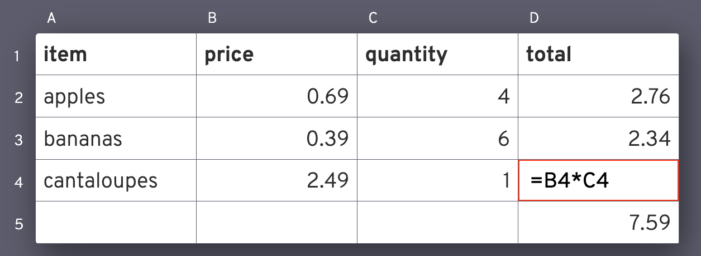
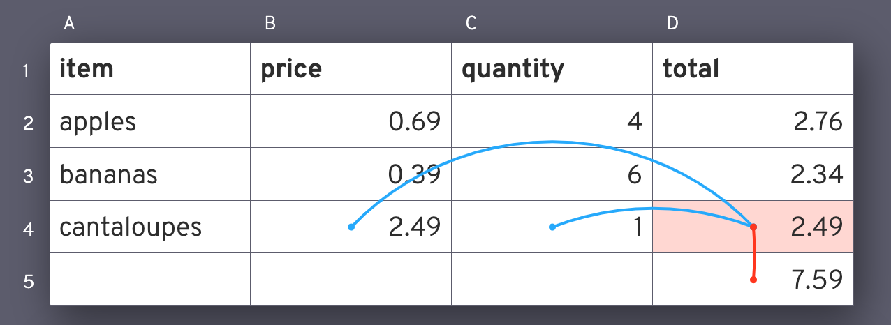
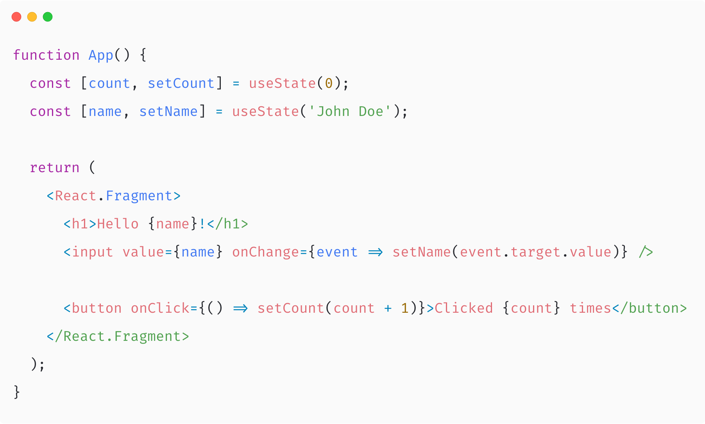
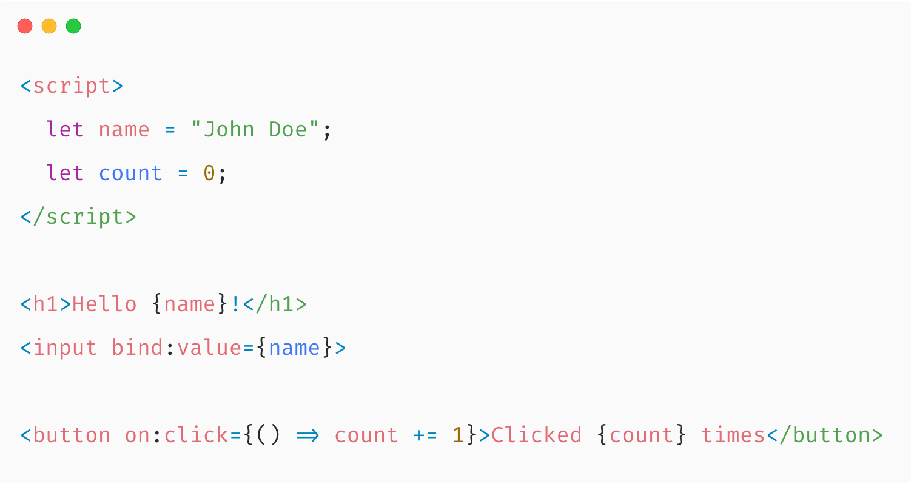

Rethinking Frontend Apps with Svelte
- Welcome to this talk about Svelte. Svelte is a **framework for building UIs**, and it's a little bit **different than the ones everyone's been using recently**
$ whoami
- I'm Umang.
- I'm a **frontend engineer at Razorpay**.
- We've been using Svelte v2 at Razorpay in multiple projects.
Eras of JavaScript
jQuery
React
???
- Let's talk about some *eras of JavaScript**.
- When most of us started web dev, we started out with **jQuery**. jQuery was nice because there were a lot of **inconsistencies between Browser APIs**, and it just made **manipulating the DOM easier**. Now we had complex apps that lacked decent state management.
- Then came along **React**, and fundamentally changed how we wrote UI. We started thinking about parts of the **UI as components**, and extending those components using ideas like **composition**. Managing the state now became so much easier.
- jQuery and React, both, became immensely popular and gave rise to a lot of plugins and libraries around them that enabled people to build all sorts of User Interfaces.
- Of course when I say React here, it's true for **other libraries like Vue and Angular** too.
- Then came along **SSR and hydration** to make our frontend apps seem faster.
- Now, we have to ask ourselves: **what's next?** Just like React made the libraries and frameworks before it seem _meh_, what would we be seeing in the near future that would make React and it's friends seem _meh_? Could it be a framework that **makes code easier and quicker to write**, and **runs faster with lesser processing overhead** so that we can target browsers that run on **lower-powered devices**? Could it be **_svelte_**?
- At **Chrome Dev Summit 2018**, the **Chrome team decided** to help make **frameworks faster and less memory-intrusive**. They were **comparing different frameworks and had things to say** about all the popular frameworks and libraries of the time.
- They **mentioned Svelte**, along with the fact that **it's already super fast** and there's **not many performance gains that can happen** anymore.
Reactivity and Spreadsheets
- Spreadsheets are **extremely powerful**. There's a reason why they **run** so much for the **business-world**.
- Spreadsheets are fast. A Virtual DOM app with the same amount of UI elements would be sluggish.
- Spreadsheets are user-friendly. People can build powerful utilities using just formulae.
Forward Referencing
- Forward-referencing would tell the underlying system to **update the value of Cell A only when the value of Cell B changes**.
- In other words, when the value of Cell B changes, **we do not want to update, or "re-render"**, the entire spreadsheet. We're interested in **updating only those cells whose values depend on Cell B**.

Example from Rich Harris' Rethinking Reactivity slides
- Let's suppose we have a spreadsheet where the value of cell D4 is the product of cells B4 and C4.

Example from Rich Harris' Rethinking Reactivity slides
- And the references of D4 would look like this. Blues are the values on which D4 depends, and reds are the cells which depend on the value of D4.
- Imagine if the **React Reconciler** had forward-referencing.**Instead of diffing the entire subtree**, would just know **exactly what parts of the tree would have changed**.
Example from Paul Stovell's What is reactive programming?
- In the **traditional programming** paradigm, there’s no way to define a **relationship between two or more variables**. Let’s
say we want _b_ to always equal to _a + 1_. This would mean that we would need to **reset the value manually** every time the
value of _a_ changes.
- Sure, we could write a **method that updates the value of a and b simultaneously** and that would be just one statement in
our program, but we as programmers **shouldn’t have to write the runtime** to define relationships. The code will become
**slightly obscure** to read if we always **use functions instead of assignment** operators in our code.
Example from Paul Stovell's What is reactive programming?
- But, what if we had a **destiny operator**?
- This operator would allow us to **declare dependencies** among variables.
- And then the **runtime would automatically update** the value of _b_ every time the value of _a_ changes.
DX vs. UX
- Another concept that I want to talk about is the idea of good DX vs. good UX.
- Good DX means the code is faster to read and easier to grasp. It’s easier to maintain, and it’s easier for beginners to write.
- Good UX means the code has to execute as efficiently as possible, considering factors like the amount of resources consumed and how quickly the user gets results of their actions.
- Good DX and good UX don’t have to be mutually exclusive, but as it stands today, they kind of are.
- Often times, as our applications get bigger, the experience gets clunkier. Apps are just more sluggish to use.
- On mobile devices where we do not have as much power and Internet bandwidth as our Desktops, animations are janky and load times are high.
Which is easier to write and maintain?
- I have two snippets here.
- The top is Vanilla JS.
- The bottom is using React.
- Using DOM APIs directly is difficult to write, read, and maintain.
- The React approach is much more developer-friendly.
Which is more performant?
- However, using DOM APIs directly is as fast as it can get.
- The React approach gets bloated pretty quickly, and becomes slow and janky.
- Sure, you can make your own optimizations or wait for the library to get better.
- But what if things were performant right out of the box?
When the `input` event is fired
Using the DOM APIs directly
Update the `<span>` in the actual DOM
Using a Virtual DOM
Update the state
Rerender the VDOM
Reconcile and figure out what changed
Update the `<span>` in the actual DOM
... better for users
... better for developers
- Let’s take a look at all the things that happen in the background here when we use DOM APIs directly vs. when we use a Virtual DOM library.
- With a VDOM library, we update the state.
- The library then recreates the VDOM in memory and then figures out what to update using it's reconciliation algorithm.
- Once it has the diff, it goes ahead and updates the actual DOM.
- While with the vanilla approach, we do the last step directly.
Best of both worlds
Write JSX
Lifecycles
BUT, compile to Native DOM API calls
No runtime? 🤔
- What if there was no runtime shipped to the user?
- What if everything was compiled to native APIs and the application could get bootstrapped quickly on the users’ devices?
- This is the primary proposition of Svelte.
- And because we're not shipping a runtime, our bundle sizes are smaller.
- And our apps take lesser time to bootstrap and apply updates to the DOM.

- I have this React app here which shows takes the name in an input field, and has a counter for the number of times I've clicked the button.

- Here's an equivalent Svelte app.
- We are reactive, we can reassign the variables directly.
- With two-way data-binding, I can just bind the _name_ to this input field.
- The Svelte code to do the same thing is more readable.
- And if you look at both side-by-side, you'll see that the Svelte code is closer to how someone would write HTML.
- This makes it easier for beginners who are familiar with the HTML way of doing things to get started with Svelte.
- This could also make it easier for people who are not primarily developers to make changes to the app.
- Aliza was a developer at Spotify when she tweeted this.
- One of her Product Managers was able to make changes to a component because they knew HTML.
1. Basics - Templating, CSS, Nesting Components
1. Reactivity - Assignments and Computed values
1. Props - Export
1. Blocks - If-else, Loops, Await
1. SSR
1. Events - DOM, Custom
1. Class Directives
1. Slots - Regular, Named
1. Lifecycle - onMount, onDestroy, beforeUpdate, afterUpdate
1. Stores - writable, readable, derived, bindings
1. Transitions and Animations - `transition`, `in` + `out`, Custom, Deferred, `animate:flip`
Differences with React
Reactive by assignments
Compiled to DOM APIs
No runtime
Declarative transitions compiled to CSS animations
Two-way binding
HTMLX instead of JSX
- Svelte is reactive by default. So your code is closer to the way you think, and without setStates sprinkled all
over.
- Svelte is compiled to DOM APIs, which makes it faster to bootstrap.
- And this, it does not have a runtime. This makes it faster to push updates to the DOM, eventually making it less
memory intensive.
- You can declare CSS transitions using your JavaScript and have them compiled to CSS. Becuase it's CSS, it runs off
the main thread and isn't janky.
- There's two-way binding, which makes writing controlled inputs easier.
- And, it's closer to HTML than JSX is, since it uses a superset of HTML called HTMLX.
Svelte @ Razorpay
Checkout runs in production on Svelte v2
Needs to have small bundle-size
Needs to be fast
Should not conflict with your code
- We have been using Svelte in production at Razorpay for about a year now.
- We started out with Svelte v2 on Checkout, and then started using it for other projects as well.
- Checkout's users aren't people with high-end devices and 100 Mbps Internet.
- More than 50% of Checkout's traffic comes from mobile devices. Mobile devices are severely underpowered.
- We needed to make our bundles small, so that the user doesn't drop off before Checkout renders.
- Checkout had to be smooth and fast in order to not intimidate users that are not tech-savvy.
- Our merchants build their websites using React, Angular, and Vue.
- If Checkout too had it's own Virtual DOM library, it would slow the app down.
- Checkout's VDOM library version could even conflict with the merchant's.
- We had been using templates and Vanilla JS. State management code was all over the place.
- Now we've moved to Svelte.
- Source code is smaller, iterations are faster, app is more predictable.
Advantages
Short, concise syntax
Transitions compiled to CSS
Reactivity by assignments
Scoped styles
DOM is the runtime
Smaller bundles
- Svelte has nice, short, concise syntax. I personally love the class directives.
- All our transitions are compiled to CSS. They're never janky.
- Reactivity happens by assignments, so it's easier to grasp.
- Styles are scoped. Our styling can co-exist with our markup and not interfere with the global styles.
- DOM is the runtime. There's no other runtime on top of the DOM. It's just faster. This makes it faster to bootstrap too.
- Because Svelte is a compiler and not a library shipped alongside your bundle, Svelte can have as many features as it wants. It does not have to worry about it's own bundle size.
- If your app is not using any of the features that Svelte has, they just won't be present in your bundle.
When wouldn't you use Svelte?
.svelte files for each component
Composition needs relearning
Bundle size increases with # of components
Two-way binding
No TypeScript support
No proper testing library
Fewer plugins
Not a lot of people know Svelte
- We need a different file for each component. Unlike React, we can't have local components in the same file.
- Composition is slightly tricky to grasp at first.
- Bundle size increases with the number of components. But you can use code-splitting and it gets smaller than having
a library shipping with your app.
- Two-way binding is back. But it's optional.
- There's no official TypeScript support yet. You'd have to rely on writing your own hacks.
- There's no proper testing library for Svelte yet. Most people compile individual components to individual bundles and then use JSDom, or Puppeteer, or Cypress.
- Because Svelte is relatively new, there are fewer third-party plugins.
- Not a lot of people know Svelte yet. If you're working on something that would need to be maintained by someone else who probably may not have worked with Svelte, you might want to avoid Svelte.
Getting started
Svelte REPL: https://svelte.dev/repl
npx degit sveltejs/template my-project
cd my-project
npm install
npm run dev
- But if I've managed to convince you to give Svelte a shot, you can get started by
1. Using the Svelte REPL. It's on the web and allows you to share code with people.
1. Or use this npx command to download a template and get started on your local machine.
- There are more projects build on Svelte that are super interesting.
- Sapper is a next.js-like framework for Svelte.
- It gives you SSR, Routing, and code-splitting out of the box.
- Svelte Native allows you to build mobile apps using NativeScript.
- It's faster than React Native and Nativescript-Vue because it does most of its work at the compile time.